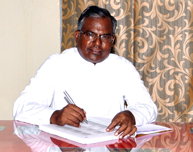
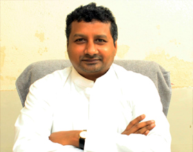

Rev. Fr. V. Antony Samy SJFr Correspondent

Rev. Fr. P. Vijaya Raju, SJFr Vice Principal

Loyola Polytechnic, formerly known as Sri Y.S Raja Reddy Polytechnic, was established in 1980 by Sri Y.S Raja Reddy Educational Trust. In 1993, the administration was handed over to the Jesuits, who run well-known institutions like Andhra Loyola College, Vijayawada, and Loyola College, Chennai.
The Government of Andhra Pradesh granted Minority Status in 1993, reserving 30% of seats for Christian Minority students, while the remaining are admitted through Polycet.